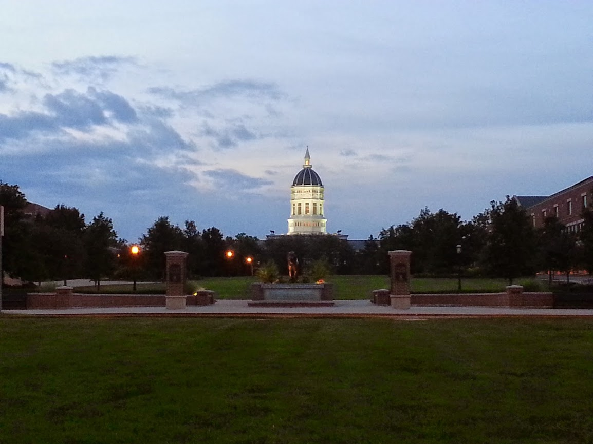

MIZ - ZOU
Missouri Weather

Spring brings chilly and dark evenings. The bright lights of buildings can create dramatic shaddows on landmarks like Memorial Union.

Summers are hot and humid, so walks are best saved for the evening. But also expect afternoon clouds and storms to regularly blow in from the west.

Crisp, clear days are regular hallmarks of autumn. It's perfect weather for kites, tennis, and sightseeing.

Expect a few rounds of snow over the winter, which is best enjoyed when the snow is still fresh as the weather often turns warm enough to melt the snow into disgusting slush within a few days.
"The only consistency in Missouri's weather seems to be its inconsistency."
- Logan Jackson